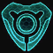
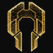
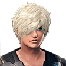
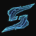
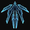
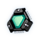
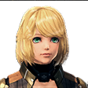

Play Order
With five continents open from early on and hundreds of side quests competing for your attention, knowing which milestones to tackle next keeps your adventure smooth and completely grind-free. Following these six chronological phases weaves companion recruitment, class progression, ドール upgrades, and cutoff checks cleanly around the main story so every new system arrives right when it feels most rewarding.
Phase 1 · Prologue to Chapter 30/6 (0%)
Your opening chapters focus on getting settled in New Los Angeles, unlocking full squad control, planting roadside probes across Primordia, and bringing three early Affinity Mission companions onto your roster so everyone starts earning Battle Points right away.
- Read Beginner Tips and enable ファッション装備.
- Clear Prologue through Chapter 3 to unlock party swapping (adding
 イリーナ,
イリーナ,  グイン, and ダグラス to your roster), クイックリキャスト, and
グイン, and ダグラス to your roster), クイックリキャスト, and  キズナクエスト.
キズナクエスト. - Plant データプローブ on every reachable FNスポット along the road in 原初の荒野.
- Follow Cross Build Stage 1 to reach

ドリフター Rank 10, then switch to
アサルト in Stage 2. - Clear
 小さな悪 after Chapter 2 and pick up Starter Lobster #0 in Lobsters after Chapter 3 so Wave 1 plushies spawn across NLA.
小さな悪 after Chapter 2 and pick up Starter Lobster #0 in Lobsters after Chapter 3 so Wave 1 plushies spawn across NLA. - Recruit early companions via Chapter 3 キズナクエスト:
 HB (Lv. 12+),
HB (Lv. 12+),  イエルヴ (Lv. 14+), and
イエルヴ (Lv. 14+), and  ヒメリ (Lv. 21+, sends you to Cauldros—safe to defer to Ch. 4–5 if underleveled) so they begin earning exploration BP.
ヒメリ (Lv. 21+, sends you to Cauldros—safe to defer to Ch. 4–5 if underleveled) so they begin earning exploration BP.
Phase 2 · Chapters 4 to 50/6 (0%)
Chapters 4 and 5 mark your first major power jump on foot by unlocking Meredith & Co. weapons, ground Overdrive, Candid & Credible armor, and Barracks pets while finishing your Longsword mastery.
- Clear Chapter 4 to recruit
 ラオ (joins during the chapter) and
ラオ (joins during the chapter) and  ルー (upon completion) and unlock
ルー (upon completion) and unlock  メレデス＆コー. Invest
メレデス＆コー. Invest  ミラニウム into Meredith at the AM Terminal to prepare an
ミラニウム into Meredith at the AM Terminal to prepare an  エーテル sword.
エーテル sword. - Recruit

フォグ, アクセナ, and
アクセナ, and  フライ from Chapter 4 Affinity Missions, and start Mia's chain with ミーアの出立 (available since Ch. 3) on Quest Chains.
フライ from Chapter 4 Affinity Missions, and start Mia's chain with ミーアの出立 (available since Ch. 3) on Quest Chains. - Clear Chapter 5 (requires リフレッシュ + FN Site 301) to unlock ground
 オーバークロックギア and
オーバークロックギア and  偽りなき真心堂. Review Overdrive Mechanics.
偽りなき真心堂. Review Overdrive Mechanics. - Complete ブレイドの仕事 (also a Ch. 11 prerequisite) to unlock
 ウルトラスラッシュ for Cross and Barracks Pets.
ウルトラスラッシュ for Cross and Barracks Pets. - Recruit
 ボゼ (アヴァランチの破戒僧),
ボゼ (アヴァランチの破戒僧),  ニール・ネール (クリューの考古学者), and
ニール・ネール (クリューの考古学者), and  マードレス (すべては私の夢のため) from Chapter 5 Affinity Missions, and clear the サーチ riddle in シークレットオーダー.
マードレス (すべては私の夢のため) from Chapter 5 Affinity Missions, and clear the サーチ riddle in シークレットオーダー. - Finish Cross Build Stage 2 at

ジェネラルソード Rank 10 to master ロングソード, then enter Stage 3 through コマンド and
ロングソード, then enter Stage 3 through コマンド and 
フルメタルジャガー.
Phase 3 · Chapters 6 to 80/6 (0%)
Mid-game progression centers on earning your Skell License after Chapter 6, bringing Cross's Core Crusher Ether multiplier online, and finishing all five of Lao's Heart-to-Hearts before starting Chapter 9.
- Check Missables while 夜光の森 survey is between 25.00% and 29.99% if you want the optional Affinity link during 恐怖の暴虐王 after Chapter 7.
- Clear Chapter 6, then complete ドールライセンス on Quest Chains for your free Lv. 20
 アーバン.
アーバン. - Immediately clear 新たなるドール at Lv. 24+ to recruit リーゼル and claim the free フレスヴェルグ. Upgrade to Lv. 30 frames at Lv. 30 via Skell Builds.
- Reach
 サイシーカー Rank 10 in Cross Build Stage 4, equip インサイドブレイカー, switch to a メレデス＆コー エーテル sword, and slot 5x
サイシーカー Rank 10 in Cross Build Stage 4, equip インサイドブレイカー, switch to a メレデス＆コー エーテル sword, and slot 5x 
パーツクラッシャー. - Clear Chapter 7 (requires 盟友) and Chapter 8 (requires 恋のキューピッド), then recruit
 ナギ and unlock
ナギ and unlock  真・旋風刃 from MIA.
真・旋風刃 from MIA. - Mandatory Cutoff Before Chapter 9. Raise ラオ to 5 Affinity Hearts and clear all 5 of his
 キズナトーク on Missables before starting Chapter 9 (he leaves permanently upon accepting Ch. 9).
キズナトーク on Missables before starting Chapter 9 (he leaves permanently upon accepting Ch. 9).
Phase 4 · Chapters 9 to 100/5 (0%)
Unlocking the Skell Flight Module after Chapter 9 opens up every high-altitude plateau on Mira, letting you reach the final six aerial FrontierNav beams, master remaining classes in minutes at Divine Roost, and claim Blossom Dance.
- Clear Chapter 9, then complete 少女が完成させた翼 to unlock the ドールフライトパック.
- With Flight unlocked, reach the remaining 6 aerial FNスポット, clear the Mechanical riddle in シークレットオーダー, and unlock
 神鳥の寝床 in Noctilum for the 2-minute Class XP farm on Exploits to finish Cross Build Stage 5.
神鳥の寝床 in Noctilum for the 2-minute Class XP farm on Exploits to finish Cross Build Stage 5. - Recruit
 セリカ via 二人の事情 (Lv. 44+, requires 不審者), clear Chapter 10's prerequisites Manhunt and 信頼, and build 1+ Affinity Heart with グイン ahead of Chapter 11's prerequisite 護りたい人.
セリカ via 二人の事情 (Lv. 44+, requires 不審者), clear Chapter 10's prerequisites Manhunt and 信頼, and build 1+ Affinity Heart with グイン ahead of Chapter 11's prerequisite 護りたい人. - During Chapter 10 Phase 2 in 白樹の大陸, burst down
 ズ・ハッグ within 2 minutes 30 seconds if you want to preserve both stone arches listed on Missables.
ズ・ハッグ within 2 minutes 30 seconds if you want to preserve both stone arches listed on Missables. - After Chapter 10, clear 護りたい人 (mandatory for Ch. 11), 使命 for
 桜花乱舞, 協力 to unlock
桜花乱舞, 協力 to unlock  六連星 and its post-Ch. 10 recruit (mandatory for Ch. 13 Act 2), and the Biological riddle in シークレットオーダー.
六連星 and its post-Ch. 10 recruit (mandatory for Ch. 13 Act 2), and the Biological riddle in シークレットオーダー.
Phase 5 · Chapters 11 to 120/5 (0%)
As you push into Cauldros for Chapters 11 and 12, start stockpiling Bonjelium ore, wrap up NLA's major alien quest arcs and Mia's recruitment, and assemble an Infinite Overdrive ground setup before the core story's fuel-draining finale.
- Upgrade main pilots to Lv. 50 Skells via Skell Builds and mine
 バンドジェリウム on Cauldros FN502, FN504, FN506, FN507, FN510, and FN511 via FrontierNav.
バンドジェリウム on Cauldros FN502, FN504, FN506, FN507, FN510, and FN511 via FrontierNav. - Clear Chapter 11, then complete 親和 for
 ゼロゼロ.
ゼロゼロ. - Complete the Definian and Professor B arcs to unlock デフィニア殲滅 on Quest Chains, recruit

ミーア viaミーアの最後, and finish all 99 Lobsters. - Configure the 100k ミラニウム Storage and 130k
 Credits Probe Layouts on FrontierNav.
Credits Probe Layouts on FrontierNav. - Prepare ground Infinite O.C.ギア gear on Cross via Cross Build because Chapter 12's final boss drains Skell fuel to zero, then clear Chapter 12.
Phase 6 · Post-Story & Chapter 130/4 (0%)
Post-Chapter 12 opens Level 60 Skell schematics like Ares 90 alongside the three-act Chapter 13 epilogue, giving you everything needed to farm top-tier ground weapons and sweep the remaining survey milestones.
- Craft アレス90 immediately after Chapter 12 via Skell Builds to one-shot Lv. 60+ Tyrants and farm Lv. 60 ground weapons including
 ダイヤスベルト極,
ダイヤスベルト極,  妖刀 葉隠之赤錆, and
妖刀 葉隠之赤錆, and  ウルトラネビュラ.
ウルトラネビュラ. - Clear Chapter 13 Act 1 (recruits the final companion on Party Builds and unlocks 英雄の試練, mandatory for Act 3) and Chapter 13 Act 2 (requires A Challenger Approaches), then complete 家族団欒 (post-Act 2, Lv. 55+, 1 Heart) for
 ヘラクレスブロウ.
ヘラクレスブロウ. - Complete Chapter 13 Act 3 to unlock Skell Quick Cooldown and return to free-roam Mira post-credits.
- Sweep remaining Collectopedia entries, Sightseeing Spots, Heart-to-Hearts, Side Quests, and Lv. 60 custom Skells on Skell Builds for 100% Mira Survey.